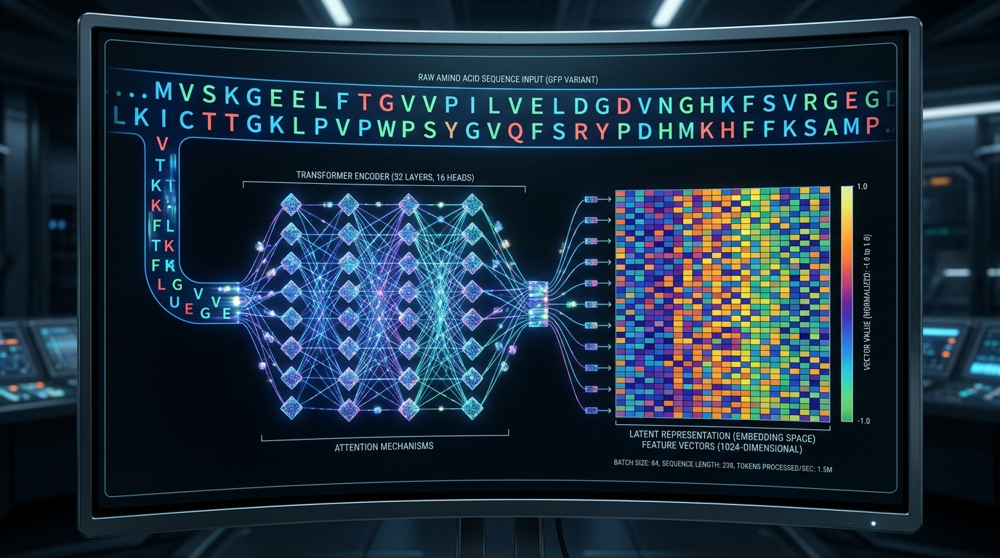
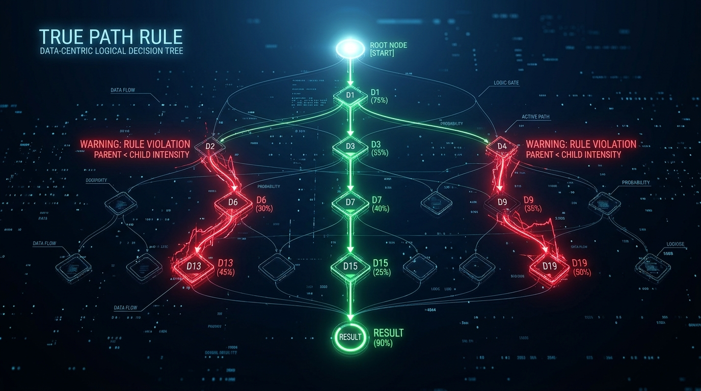
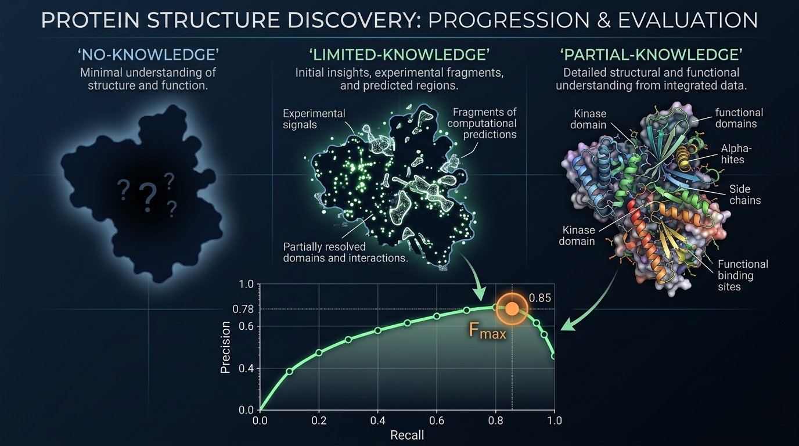

Goal: Build a self-contained machine learning pipeline to predict Molecular Function (MF) Gene Ontology terms for proteins based strictly on their amino acid sequences. You will use the provided training set of experimentally determined GO terms to train your model. Your ultimate objective is to optimize the maximum information-accretion weighted F1-measure specifically for the MF subontology across no-knowledge, limited-knowledge, and partial-knowledge protein targets. You do not need to consider Biological Process or Cellular Component targets.
The core of the evaluation and training logic rests on the Information-Accretion (IA) metric. Unlike standard F1-measures that treat all GO terms as equal, the IA framework prioritizes specificity. IA weights are defined as the information gain:
$$IA(v) = -\log_2(P(v | pa(v)))$
where v is a GO term and pa(v) represents its parents.
This approach ensures that predicting a general term (e.g., "binding") yields less reward than a highly specific term (e.g., "zinc ion binding"). To maintain data integrity, the pipeline incorporates a reliability multiplier ($\theta$). Experimental evidence is assigned a weight of 1.0, while Inferred from Electronic Annotation (IEA) is scaled down. In cases where multiple evidence codes exist for a single term, the system is designed to select the maximum weight to prioritize the most informative known annotation.
The pipeline utilizes high-capacity Protein Language Models (PLMs) to transform raw amino acid sequences into dense numerical vectors.

The proposed architecture is a hybrid neural network that integrates sequence-level embeddings with structural data where available.
The model combines the ESM-2/ProtT5 embeddings with a Graph Convolutional Network (GCN). The GCN processes 3D structural contact maps to refine node embeddings, which are then passed to a Multi-Layer Perceptron (MLP) classification head. This head uses Sigmoid activations to accommodate the multi-label nature of GO term prediction.
To handle the extreme sparsity and imbalance of GO annotations, the pipeline employs Asymmetric Loss (ASL) or Focal Loss. Furthermore, to ensure the model respects the biological logic of the Gene Ontology, a custom Hierarchical Regularization Loss is implemented. This loss enforces the True Path Rule: it penalizes the model if a child term is assigned a higher probability than its parent term, ensuring consistent predictions across the Directed Acyclic Graph (DAG).

To ensure the model generalizes well to new biological discoveries, the evaluation framework utilizes a temporal split (T0 for training, T1 for testing). Targets are stratified into three distinct categories based on their annotation status:
The primary performance metric is the IA-weighted $F_{max}$, which identifies the optimal threshold across the precision-recall curve while weighting specific, rare GO terms more heavily than common, non-specific terms.

| Component | Specification |
|---|---|
| Embeddings | ProtT5-XL (Primary) or ESM-2 650M (Efficient) |
| Architecture | PLM-GCN Hybrid with MLP Head |
| Loss Function | Asymmetric/Focal Loss + Hierarchical Regularization (True Path Rule) |
| Weighting | Bayesian IA weights ($-\log_2(P(v|pa(v)))$) |
| Targeting | MF Subontology (NK, LK, PK targets) |
| Evaluation | IA-weighted $F_{max}$ via temporal split |